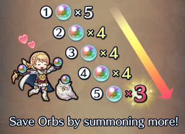
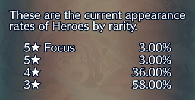
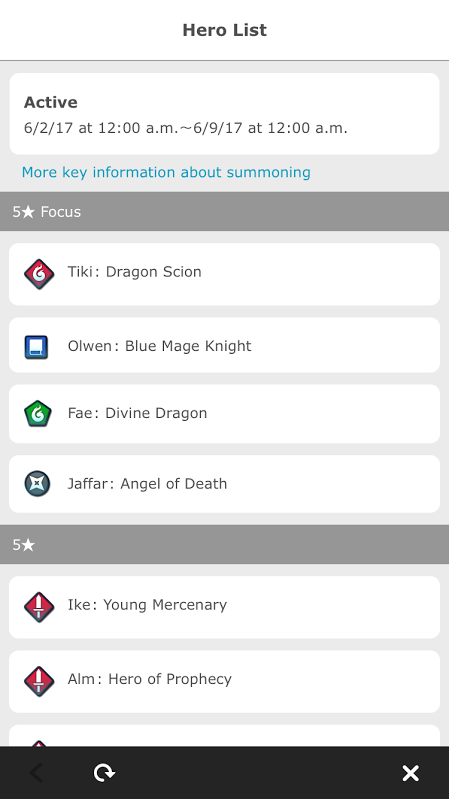

Characters can be summoned from the summons menu. There will be one or more focus banners that can be chosen from. The focus banners change every few weeks or so. *A focus banner increases the likelihood of summoning the 5* characters on that particular banner. Generally, it’s a good idea to save 20 orbs before summoning, since the cost of summoning a single character from the set of 5 orbs will decrease depending on the number of characters you summon from that particular set.
The first character costs 5 orbs, the second through fourth characters cost 4 orbs, and the fifth orb costs 3 orbs. Summoning all the orbs in a particular set costs 20 orbs, saving a total of 5 orbs.
The rarities of the characters you summon depends on the appearance rates, which can be viewed by pressing the appearance rates button. 5* characters are the most rare, with a 6% chance of being summoned, while 3* characters are the most common, with a 58% chance of being summoned.
Why do rarities matter? 5* characters have better stats in general and have access to a more powerful weapon (which may have additional bonuses) and better skills..
The appearance rates can change. If you summon five consecutive characters without summoning a 5* character, the appearance rates of summoning a 5* character (both 5* focus and 5* in general) increases by 0.25%. Summoning a 5* character resets the appearance rates to their default values. Note: The appearance rates will only change if you summon five consecutive characters (without summoning a 5* character) from one particular focus banner, not if you switch between the banners, and the appearance rates will change for that banner only.
The characters in the summoning pool can be viewed by pressing the details button. The page will show you how long the focus banner will be available for, and will show you which characters are available in which rarities. Note: Some characters can appear in multiple rarities.
After pressing the summon button, a screen like this will appear. The color of the stone indicates the type of character that particular stone will summon, namely: